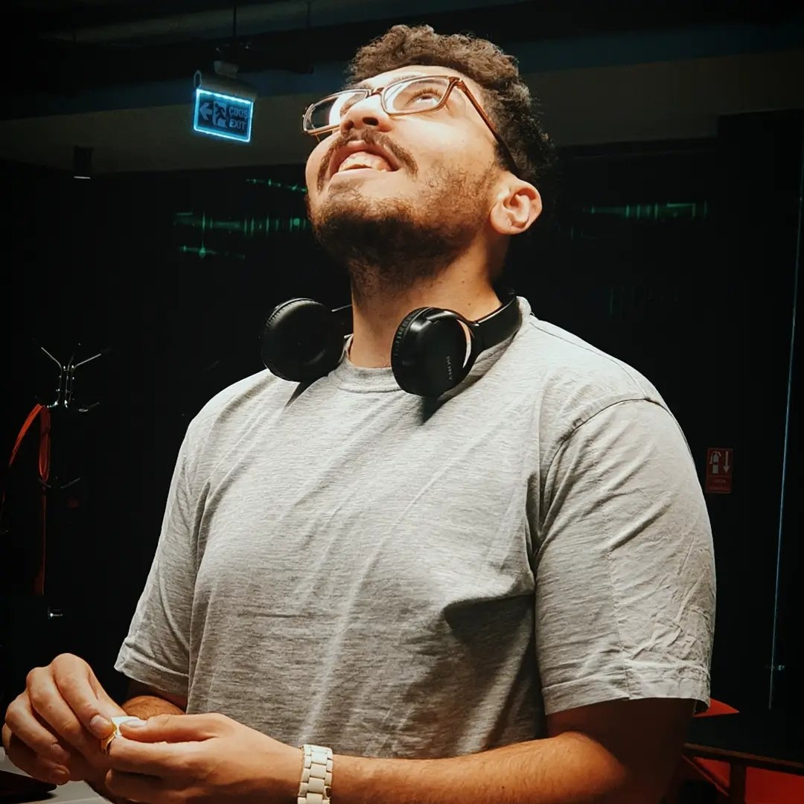

~400k/s
events — Go detection engine

Works where security meets systems: formed and led a six-engineer DevSecOps team, sole-built a real-time Go detection engine sustaining ~400k events/sec, first-authored a peer-reviewed intrusion-detection paper (AINA 2024, Springer).
CI/CD hardening, SIEM/SOAR on open-source stacks (ELK, Wazuh, TheHive), Kubernetes and Terraform infrastructure, AWS security.
Real-time pipelines in Go with Kafka, ClickHouse, and Redis; filtering engine sustaining ~400k events/sec, OpenTelemetry end to end.
Architecture and code review, penetration-testing tooling, technical due diligence on venture investments (15+ assessed).
| REV A | International Chemistry Olympiad (IChO) 2012 | Egypt national team — Washington, D.C. |
| REV B | Türkiye Bursları — Government Scholarship 2014 | Funded BSc at Middle East Technical University |
| REV C | MIT Enterprise Forum Pan-Arab 2017 | Startup competition finalist |